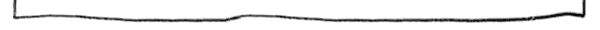

Home
Crickets
Events
Ideas

Locations
Philosophy


I wanted to make an art-making machine that responded to the changes in temperature during the day (or night). I wanted the machine to run over the course of a day (or night) and give me a visual sense of the temperature. -Margaret

|
I wanted the machine to tell me if the temp had been mostly hot or mostly cool. In Los Angeles it can be hot during the day and still get cool at night. Our house heats up at the end of the day and doesn't cool down until later in the evening. This is the first painting I made with the machine. I let it run overnight. The paper started out in the red paint while the house was still warm. Later the machine tipped the paper into the cool colors (greens and blues) when the temperature dropped at night. |

|
The next morning I set the machine to run during the day. It was bright and sunny when I woke, so I knew it was going to be a hot day. I set the machine up in the morning and let it run until early evening. You can tell by all the red and yellow that it was mostly hot that day. |

|
Here's a photo of the machine set up on my kitchen floor. The cricket is in the lower left corner. Two sensors are attached to the cricket: a temperature sensor, and a home-made sensor that detected when the paper was in either container of colored water. The picture is annotated, which you can see in this larger image. |

|
I made a switch that would turn the motor off when the paper reached the water. The switch plugged into the sensor port. I could have used two switches (one for the cool side and one for the warm side), but I was already using a temperature sensor so I only had one sensor port left. This drawing is a hard to see this small, so I posted a larger version. |

|
It was a little trickier to program than I thought it would be. I needed a good way for the program to loop. I finally figured out that the program just needed to sit and wait until it was cool (when it was on the warm side) or until it was warm (when it was on the cool side). Using sub-procedures worked well: the subprocudures were about making the motor work right, and the main procedure was about looking at the temperature values. Sensorb is the temperature sensor and sensora is the switch that turns the motor off. The "wait" ensures that the wire lifts out of the first tank of water before looking at the sensor to shut off. Otherwise, it would shut off immediately. It is easier to see the program in this larger image. |

{kind=link}
{kind=link}
{kind=link}